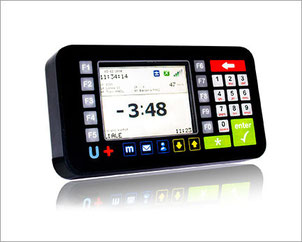
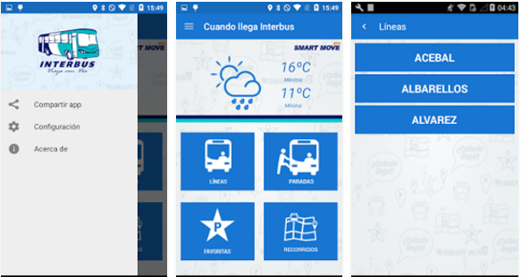

Arribos en tiempo real
Consultá cuánto falta para que llegue el colectivo a una determinada parada.
Consultá en tiempo real cuánto falta para que llegue tu colectivo.
Interbus utiliza tecnología basada en sistemas GPS para conocer la ubicación de sus unidades y ofrecer información actualizada a sus pasajeros.
Desde la aplicación podés consultar los próximos arribos de una parada determinada y visualizar las unidades directamente en el mapa.

La aplicación reúne información de los servicios de Interbus para que puedas consultar tus viajes de manera rápida y sencilla.
Consultá cuánto falta para que llegue el colectivo a una determinada parada.
Guardá las paradas que utilizás con frecuencia para acceder rápidamente a su información.
Visualizá en el mapa la ubicación de los colectivos que se encuentran en servicio.
Compartí la aplicación y los próximos arribos mediante SMS o redes sociales.
La información puede consultarse las 24 horas, los 365 días del año.
La consulta utiliza la conexión a Internet del teléfono y tiene un consumo limitado.

La aplicación permite conocer el tiempo de arribo de un colectivo a una parada determinada a través de diferentes opciones y funcionalidades.
Seleccioná la parada que querés consultar.
Conocé cuánto falta para los próximos colectivos.
Consultá la ubicación de las unidades directamente en el mapa.
Para el correcto funcionamiento de Cuando llega Interbus , es necesaria una buena conexión a Internet. El consumo de datos es muy limitado.
Además, el colectivo que estás esperando debe encontrarse a menos de una hora de la parada consultada.
Descargá la aplicación y consultá los próximos arribos desde tu teléfono.
Descargar app